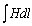

6.3.1. Постановка задачи
Как отмечалось, магнитные цепи в практических устройствах обычно содержат участки из ферромагнетиков, магнитная проницаемость ma которых зависит от напряжённости магнитного поля Н, и воздушные промежутки с постоянной проницаемостью m0. Зависимость магнитной индукции от напряжённости магнитного поля B(H) в ферромагнетиках нелинейная, поэтому магнитные цепи, как правило, являются нелинейными и все расчёты устройств с ферромагнетиками ведут с определённой степенью точности (в зависимости от упрощений при линеаризации кривой В = f(Н) и т. п.).
В практических расчётах неразветвлённой магнитной цепи часто пренебрегают магнитными потоками рассеяния и учитывают только магнитный поток вдоль основной магнитной цепи, принимая его неизменным во всех её сечениях. Всю МДС вдоль замкнутой магнитной цепи представляют в виде алгебраической суммы МДС на отдельных разнородных участках магнитной цепи, т. к. интеграл  вдоль замкнутого пути может быть представлен в виде суммы интегралов отдельных участков этого пути.
В силу малости воздушных промежутков в простых магнитных цепях часто пренебрегают «выпучиванием» в них магнитного поля, считая поперечное сечение магнитного потока в зазоре таким же, как в магнитопроводе, или увеличивая его сечение на 10…20% по сравнению с сечением, например, полюсов электромагнита при его длине
d > 0,1l , где l – ширина (или диаметр) магнитопровода.
В сложных магнитных цепях нельзя пренебрегать потоками рассеяния и магнитным состоянием ферромагнетиков при неоднородном намагничивании: магнитную цепь приходится рассматривать как цепь с распределёнными параметрами, используя методы расчёта электромагнитных полей, в т. ч. метод последовательных приближений, метод конечных элементов и др.